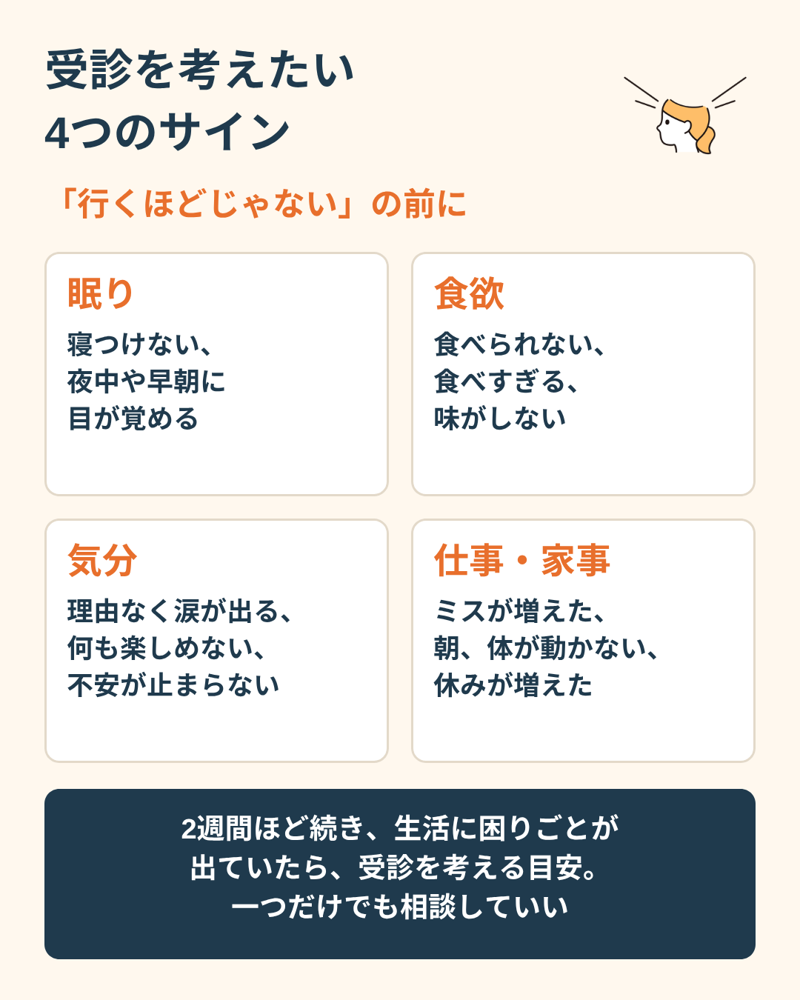
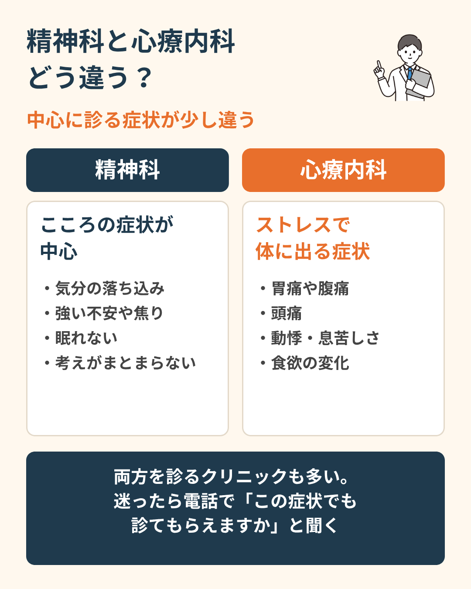
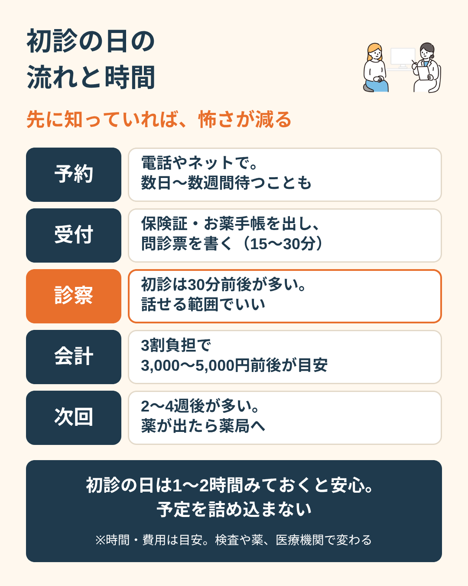
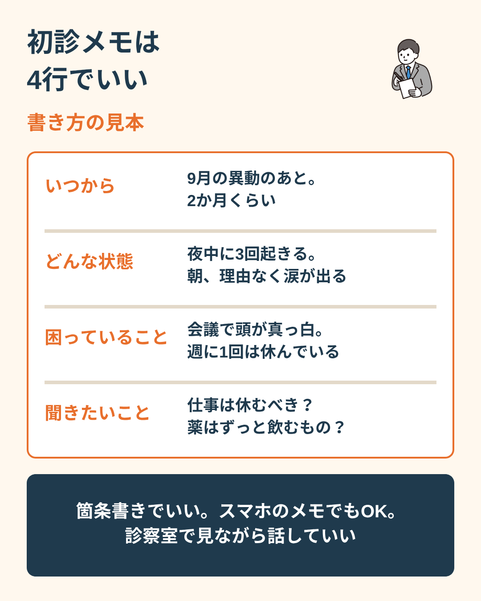
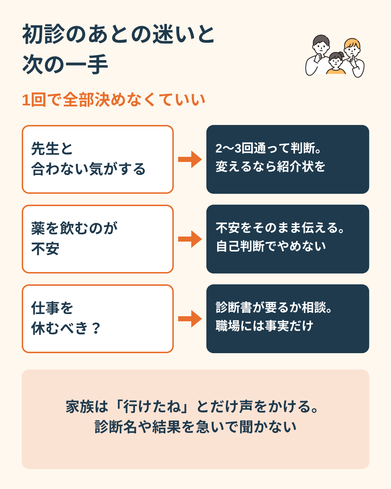

受診をためらう理由と、受診を考えたい目安
精神科や心療内科に行けない理由は、人によってさまざまです。いちばん多いのは「これくらいで行っていいのか分からない」という迷いです。周りの人も疲れているし、自分だけが弱いのではないか。眠れないのは忙しいせいで、気の持ちようで何とかなるのではないか。そう考えて、受診を先のばしにしているうちに、朝起きられない日が増えていった、という話はよく聞きます。
次に多いのが、「精神科」という言葉そのものへの抵抗感です。家族や職場に知られたらどう思われるか、記録が残って不利にならないか、という心配です。医療機関には守秘義務があり、本人の同意なく職場に受診の事実が伝わることは基本的にありません。健康保険を使うと保険者に受診の記録は残りますが、病名が職場に通知される仕組みではありません。心配なことがあれば、受付で「会社に連絡がいくことはありますか」と聞いてかまいません。
では、どんなときに受診を考えればいいのでしょうか。ひとつの目安は、眠り・食欲・気分・仕事や家事のどれかに変化があり、それが2週間ほど続いて、生活に困りごとが出ているかです。たとえば、寝つけない日や夜中に何度も目が覚める日が続く、食べられない、または食べすぎてしまう、理由もなく涙が出る、何をしても楽しくない、仕事のミスが増えて休む日が出てきた、といった状態です。どれか1つでも、本人がつらいと感じているなら、相談していい理由になります。

一方で、「死にたい気持ちが強い」「自分を傷つけてしまいそう」というときは、予約を待たずにすぐ相談してください。夜間や休日なら、地域の精神科救急の相談窓口や、各地の「こころの電話相談」などにつながる方法があります。眠れない日が続いているときの整え方は睡眠の整え方と主治医・職場への伝え方でもまとめています。
「半年くらい『まだ大丈夫』と言い続けていました。ある朝、駅のホームで電車に乗れなくなって、そのまま家に帰りました。その日の午後にやっと電話をかけました。今思えば、眠れなくなった最初の頃に行けばよかったと思います。」
精神科と心療内科、どちらに行く？予約の電話のかけ方
最初に迷いやすいのが、精神科と心療内科のどちらに行けばいいか、です。大まかに言うと、精神科は気分の落ち込みや強い不安、眠れない、考えがまとまらないといった「こころの症状」が中心です。心療内科は、ストレスが原因で胃痛や頭痛、動悸、息苦しさなど「体に出る症状」を中心に診る診療科です。ただ、実際には「精神科・心療内科」と両方を掲げて、どちらの症状も診るクリニックが多くあります。看板の名前より、自分の症状を診てもらえるかを確かめるほうが大切です。

医療機関を探すときは、通いやすさを最優先にしてください。精神科や心療内科は、2〜4週間に1回ほどのペースで通うことが多いからです。家や職場から30分以内で行けるか、仕事のあとや土曜日に診察があるか、を確かめておくと続けやすくなります。初診は予約制のところが多く、地域や時期によっては数週間先まで埋まっていることもあります。1か所で断られても、それはあなたのせいではありません。2〜3か所に問い合わせてみましょう。
電話が苦手な人は、話す内容を先にメモしておくと、かけるハードルが下がります。たとえば、次のような言い方で十分です。
「初めての受診で、予約をお願いしたいです。2か月ほど前から眠れない日が続いていて、気分が落ち込んでいます。こちらで診ていただけますか。」
聞かれることが多いのは、名前・生年月日・連絡先・主な症状・ほかの病院にかかっているかどうか、です。うまく話せなくても、受付の人は慣れています。ネット予約やメールで受け付けているクリニックもあります。
初めてでどこに行けばいいか分からないときは、かかりつけの内科医に相談して紹介してもらう方法もあります。また、お住まいの地域の保健所や精神保健福祉センターでは、こころの健康についての相談を無料で受け付けています。「受診したほうがいいか分からない」という段階で相談してもかまいません。
初診の日の流れと、かかる時間・費用の目安
「中で何をされるか分からない」ことが、怖さを大きくしていることがあります。初診の日の流れを先に知っておきましょう。当日は、受付で健康保険証（マイナ保険証）を出し、お薬手帳があれば一緒に渡します。そのあと問診票を書きます。問診票には、いつからどんな症状があるか、困っていること、これまでの病気や飲んでいる薬などを書く欄があります。15〜30分ほどかかることが多いので、予約時刻より少し早めに着くと落ち着いて書けます。
診察では、医師が問診票を見ながら、今の状態やこれまでの経過を聞いていきます。初診は時間をかけて話を聞くことが多く、30分前後が一つの目安です。クリニックによっては、医師の診察の前に、看護師や心理職が話を聞く「予診」があります。聞かれたことにうまく答えられなくても大丈夫です。話したくないことは「今日は話したくありません」と言ってかまいません。初診で必ず薬が出るわけではなく、薬を使うかどうかは医師と相談して決めます。

費用は、健康保険の3割負担の場合、初診でおおむね3,000〜5,000円前後が目安です。検査や処方の有無、医療機関によって変わるので、心配なら予約のときに聞いておきましょう。薬が出た場合は、薬局での支払いが別にかかります。通院が長く続きそうなときは、自立支援医療（精神通院医療）という制度を使うと、通院や薬の自己負担が原則1割になり、所得に応じて月ごとの上限も決まります。申請は市区町村の窓口で行い、医師の診断書が必要です。制度の細かい条件は変わることがあるので、使えるかどうかは主治医やクリニックの受付、市区町村の窓口で確認してください。
初診で「何を話すか」。メモの作り方
診察室に入ると、緊張して頭が真っ白になる人はたくさんいます。家では言えると思っていたことが、医師の前では出てこない。帰り道に「あれを言い忘れた」と気づく。こうしたことを防ぐのが、事前のメモです。きれいな文章にする必要はありません。「いつから」「どんな状態か」「何に困っているか」「聞きたいこと」の4つを、1行ずつ書くだけで十分です。

「いつから」は、だいたいの時期で大丈夫です。「春の異動のあとから」「夏休み明けから」のように、きっかけになった出来事と一緒に書くと、医師も経過をつかみやすくなります。「どんな状態か」は、気持ちだけでなく、眠り・食事・体の変化を具体的に書きます。「眠れない」より「夜中に3回目が覚めて、朝4時から眠れない」のほうが伝わります。「困っていること」には、仕事や家事、人づきあいへの影響を書きます。休んだ日数や、できなくなったことがあれば添えましょう。
「聞きたいこと」は、遠慮せずに書いてください。「仕事は休んだほうがいいですか」「薬はどのくらい飲み続けるものですか」「診断書はもらえますか」など、気になることを2〜3個に絞っておくと、診察の最後に聞きやすくなります。これまでに飲んだ薬や、ほかの病院での治療があれば、それもメモに加えておきます。話すのが苦手な人は、メモを医師に渡して「これを読んでください」と言ってもかまいません。
「スマホのメモに4行だけ書いて行きました。診察室で緊張して声が震えたので、画面をそのまま先生に見せました。『よくまとまっていますね』と言われて、少し肩の力が抜けました。」
家族や信頼できる人に付き添ってもらうのも、ひとつの方法です。待合室まで一緒に来てもらうだけでも安心できますし、本人の同意があれば診察に同席して、家での様子を補足してもらうこともできます。
初診のあとによくある迷いと、次の一手
初診が終わってほっとしたのもつかの間、次の迷いが出てくることがあります。よくあるのが「先生と合わない気がする」という迷いです。初診は緊張していますし、医師も情報を集めている段階なので、1回だけで相性を決めるのは早いこともあります。目安として2〜3回通ってみて、それでも話しにくい、質問に答えてもらえないと感じるなら、医療機関を変えることも考えてかまいません。変えるときは、今の医師に紹介状（診療情報提供書）を書いてもらうと、これまでの経過が次の医師に伝わり、同じ説明を一からせずにすみます。
次に多いのが、薬への不安です。「飲んだら性格が変わるのでは」「やめられなくなるのでは」と心配になる人は少なくありません。不安な気持ちは、そのまま医師に伝えてください。どんな効果をねらった薬か、どんな副作用が出やすいか、どのくらいの期間飲むことが多いかを聞いてかまいません。大切なのは、自己判断で急にやめないことです。飲みにくさや副作用が気になるときは、次の診察を待たずにクリニックに電話で相談しましょう。薬を飲みながら働くときの工夫は精神科の薬を飲みながら働く人へでまとめています。

仕事を休むかどうかで迷う人も多くいます。医師から休養をすすめられたら、職場に出す診断書が必要かどうかを相談しましょう。職場に伝えるときは、病名を詳しく話す必要はありません。「医師から〇週間の休養が必要と言われました」と、事実と期間を伝えれば十分です。診断書を受け取ったあと、上司にどう切り出すかで悩んだ人の体験は休職の診断書を鞄に入れたまま出社した5日間に書いています。
家族の方は、本人が受診から帰ってきたら、まず「行けたね」「おつかれさま」と声をかけてあげてください。診断名や先生に何を言われたかを、その日のうちに詳しく聞き出そうとすると、本人はかえって疲れてしまうことがあります。話したくなったときに聞く、という姿勢で十分です。通院の日に送り迎えをする、帰ってきた日の家事を代わる、といった具体的な手助けが、何よりの支えになります。
よくある質問
関連記事
受診のこと、働くこと、一人で抱えなくていい
「受診したほうがいいのか分からない」「休むか続けるか迷っている」。mimemimeの無料相談では、今の状態を聞きながら、次の一歩を一緒に整理します。医療の判断はできませんが、相談先の選び方や、働き方の考え方を一緒に考えます。ご家族からのご相談も受け付けています。
無料で話してみるこの記事に、聞いてみたいことはありますか？
「自分の場合はどうなんだろう」と思ったことを、気軽に書いてみてください。いただいた質問は個別にお返事したうえで、匿名で記事にすることがあります。
mimemime代表。就労支援の現場経験をもとに、障がいのある方の働く不安に寄り添う記事を執筆。